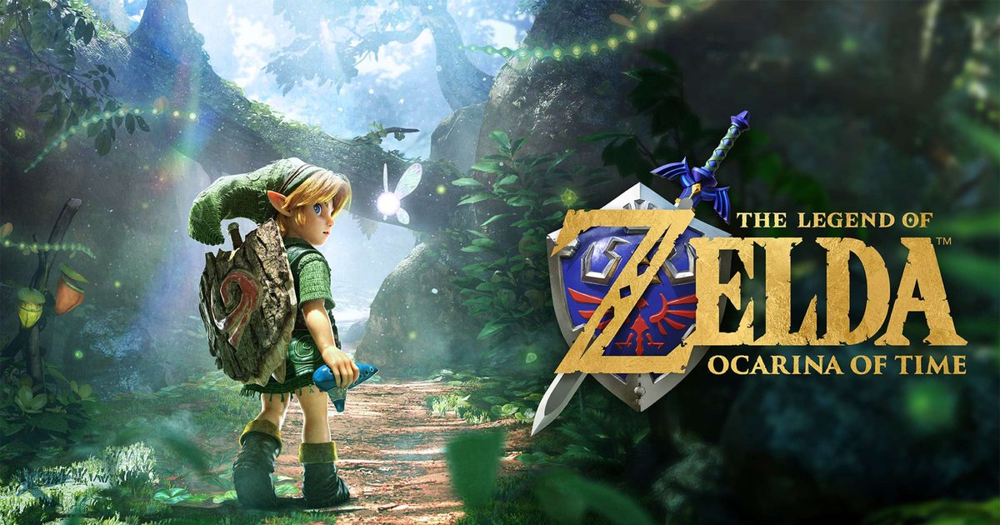

2026-10-24 · 重制观察
任天堂今天在 Nintendo Today! 上放出了两支全新广告，把日期又钉了一次：《塞尔达传说：时之笛》Switch 2 重制版将于 11 月 5 日发售，距今还有不到两周。 1998 年的 N64 原作，2026 年做「从零重建」，同时挂上系列 40 周年（初代《塞尔达传说》1986 年面世）的名头。 但真正值得问的不是「画面提升了多少」，而是：一个已经被重做、移植、复刻过四次的作品，任天堂这次为什么要动它，又到底往里面加了什么。答案其实是三件和画面基本无关的事。

10 月 14 日那支接近五分钟的概览预告，加上今天的广告，把内容摊开了。视觉重建、过场全程配音并扩充对白、交响乐团重新录制配乐，这些属于「理所当然」的部分； 真正属于新增的第一类，是操作现代化：一个独立的跳跃键、一个冲刺、以及可以用右摇杆自由转动的镜头。 三样东西在 1998 年都不存在——当年的《时之笛》靠的是坦克式操作与 Z 注目锁定，视角是设计者替你决定好的。
第二类，是麦克风陶笛。只要林克已经学过某段旋律，你就可以对着 Switch 2 的麦克风把它哼出来，或者拿真实乐器演奏，游戏里林克的陶笛会作出回应。 这一步看着像噱头，其实很重：它把「按五个键演奏一首曲子」改成了「你会不会吹这首曲子」。这是系列第一次把游戏内的音乐机制，和玩家在真实世界里的技能挂上钩。
第三类，是「陨落英雄殿」（Hall of Fallen Heroes，官方文案里也出现过 Hall of Fallen Foes 的写法）。 这是一间只存在于本版的房间：你击败过的怪物会以雕像的形式陈列其中，可以读它们的资料，也可以直接重打。预告里那场重打 King Dodongo 的画面带着计时，任天堂说更快的通关会拿到记录在存档里的奖牌。 需要说清楚的是，「重打 boss」本身不是新东西——2011 年的《时之笛 3D》就有 Boss Challenge 模式。真正的新增量在于它被搬回了游戏世界里：从主菜单的一个模式，变成冒险途中的一间屋子，还配上了计时与奖牌这两个会把人拉回去练的钩子。
另外还有一层被塞进来的东西：ZELDA NOTES（在手机端的 Nintendo Switch App 里）可以查看当日成就、根据参考图找游戏内地点、在手机上吹陶笛； 既有的塞尔达系列 amiibo 触碰后会给出道具；2027 年发售的少年林克与少年塞尔达两款新 amiibo（各 24.99 美元）解锁的是「复古画面风格」面具； 官方同步卖的还有 49.99 美元的电动陶笛周边。数字标准版 59.99 美元，下载约 27 GB。
先看价格史。过去二十多年，《时之笛》每一次重新露面，都被放在很低的价格位上：《时之笛 里世界》（Master Quest）是 GameCube 版的预约特典； Wii 虚拟主机的 1000 Wii Points 大约 10 美元；2011 年《时之笛 3D》定价 39.99 美元；Switch Online 的 N64 库则是会员内含。 换句话说，这是一款长期被当作「附赠品 / 低价补完 / 会员福利」来流通的作品。而 11 月 5 日，它第一次以本世代第一方的最高档全价，作为「《时之笛》本身」被卖出去。
再看那个「复古画面风格」面具。这件事挺黑色幽默：任天堂先用一整代的技术把 1998 年的低多边形抹平，转头又把 1998 年的低多边形当作一种可以解锁的皮肤卖回来。 这意味着重制不只是更新画面，它同时把旧版本变成了一种可消费的风格——只有当新版本足够漂亮时，丑才变得值钱。 同样地，49.99 美元的电动陶笛也是在卖同一件东西：让你把按键演奏升级成真的在一个物件上吹。
最后是那个没人明说的问题：为什么又是《时之笛》，而不是一直被粉丝催的《姆吉拉的假面》？ 因为《时之笛》是 3D 动作冒险的通用语言——锁定、箱庭、地下城、时间跳跃，这些词汇的行业定义基本由它写定。 在 40 周年这个节点上，任天堂需要的不是「最好玩的一作」，而是「最安全的一作」：一个能被当成标准答案、直接递给没玩过塞尔达的新玩家的样本。 这也解释了为什么这次的操作现代化是全量做的——它服务的对象不是当年那批人，是 2026 年第一次进海拉鲁的人。
我们的观察：风险同样藏在这三件新增里。其一，结构没动——关卡、谜题、娜薇的提示节奏都还在，重制在升级体验的同时，也把 1998 年那批「设计者替你决定视角」的产物一并固化了； 其二，自由视角与跳跃、冲刺，有可能和原本建立在固定机位上的空间设计互相摩擦：当年某些房间之所以好解，是因为镜头只能那样看，一旦观众自己转镜头，那些线索的引导强度就变了； 其三，麦克风这件事有两道现实门槛：识别准不准，以及有多少人愿意在游戏时对着主机开口。
我们的观点：这次重制值不值，不该拿「画面提升多少」来量，因为那是必然；应该看它有没有把《时之笛》从「一个需要被解释的经典」，变成「一个不需要解释也能玩下去的游戏」。 麦克风陶笛、陨落英雄殿的计时奖牌、跳跃冲刺这三件事，恰好分别对应「你真的会吹」「你可以练」「你不必适应坦克操作」——它们指向的都是同一件事：去掉门槛。 本站的判断是：思路对得相当清楚，真正的胜负手在具体执行——尤其是自由视角会不会把原本靠机位设计的解谜给拆散。
我们的案例对比（一）：历代《时之笛》都在补什么
| 版本 | 年份 · 平台 | 入手成本 | 真正新增 | 价值定位 |
|---|---|---|---|---|
| N64 原版 | 1998 · N64 | 买卡带 | Z 注目、箱庭地下城 | 定义 3D 动作冒险 |
| 里世界 Master Quest | 2003 · GameCube | 预约特典 | 改造过的地下城 | 给已经通关的人 |
| 虚拟主机版 | 2007 · Wii | 约 10 美元 | 无 | 让它能在现代电视上跑 |
| 《时之笛 3D》 | 2011 · 3DS | 39.99 美元 | 重建模组、裸眼 3D、Boss Challenge | 第一次「重制」级别的整改 |
| Switch Online N64 | 2021 · Switch | 会员内含 | 无（便捷性为主） | 订阅制里的怀旧位 |
| Switch 2 重制版 | 2026 · Switch 2 | 59.99 美元 | 全语音、交响乐、跳/冲刺/自由视角、麦克风陶笛、陨落英雄殿与计时奖牌 | 被抬到「本世代标准答案」的位置 |
我们的案例对比（二）：任天堂近年的重制定价线
| 作品 | 定价 | 类型 |
|---|---|---|
| 《密特罗德 究极复刻版》 | 39.99 美元 | 复刻（贴图与操作现代化） |
| 《Another Code 追忆》 | 49.99 美元 | 两作合集重制 |
| 《路易吉洋馆 2 HD》 | 59.99 美元 | 高清移植 |
| 《纸片马力欧 千年之门》 | 59.99 美元 | 重制 |
| 《塞尔达传说 织梦岛》 | 59.99 美元 | 完全重制 |
| 《御天之剑 HD》 | 59.99 美元 | 高清化（低价预期落空引发争议） |
| 《时之笛》Switch 2 | 59.99 美元（周边另计 49.99 美元起） | 从零重建 + 全语音 |
我们的实验：上线后我们打算做两件任何人都能复现的小测试，也欢迎你在评论区回帖。 测试一（重玩动机）：在陨落英雄殿里挑一个 boss，记录第一次击败与练到满意的耗时差，然后隔两周再问自己一次还想不想回去——用来判断「计时 + 奖牌」到底创造了新的重玩动机，还是只是把《时之笛 3D》的 Boss Challenge 换了个位置、同样很快被遗忘。 测试二（自由视角的副作用）：在依靠固定机位给出线索的房间里，先不动镜头走一遍，再全程右摇杆自由转视角走一遍，比较两次找到解法的时间与「被娜薇提示」的次数——如果第二次明显更慢或需要更多提示，就说明重建的镜头正在拆掉原本的引导。 这两个数，比任何一段画质对比视频都更能说明这次重制的成色。
我们的评分：期待值 8.5／定价友好度 6.6 → 综合 7.8。 期待值高，是因为它明确知道自己要补什么；定价这栏给低，是因为 59.99 美元之外还要为「怀旧的实体形态」再掏一次钱，这个组合对只想要一版游戏的人来说并不友好。
给三类玩家的具体建议：
一句话收尾：这次重制最聪明的地方，不是把 1998 年画得更好看，而是承认 1998 年的那套操作与引导已经需要被翻译；最让人警惕的地方，则是它一边翻译，一边把「1998 年的样子」重新包装成可以卖钱的皮肤。 11 月 5 日发售，2027 年还有两款 amiibo。在那之前，把期待放在「它能不能让新玩家不需要解释就玩下去」上，这比争论画面提升百分之多少要实在得多。